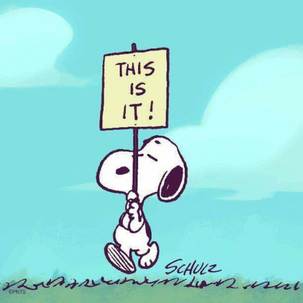

We’ve heard that before, amiright?
This is it, and Now is all there is, and there’s nowhere to get to, we already have what we’re seeking, and yada yada yada?
Nothing new there. We know all this.
And yet… but still… but also….but but… however, except, although…
Surely there’s more than this.
Because this kind of sucks. Or maybe not really sucks, but certainly it's not enough. There’s still reactivity, and lack of expansion, and thoughts on a habitual loop that ensnare us regularly.
And enlightenment hasn’t shown up yet. Or maybe it has, but it’s left. Or maybe there are still higher levels to be attained, and we haven’t arrived at the end.
Clearly there’s a there to get to. Which is surely why all those teachers tell of it, and try to explain so we understand, and point to any of the many many methods for getting there.
Life is a journey; we’re on a path. And paths have an end point, an arrival place.
Although this one is called the pathless path. So there’s no real path. It isn’t there, not even sort-of. It’s pretend. Otherwise it wouldn’t be called pathless.
But OK. Wherever it is, we want to get there, And we’re not there, not done, not arrived.
So this is not it.
Although some of us are lucky enough to be one of the special ones who do get there.
It’s done, we did it. Ta da!
Now the job is to stay there.
Abide there.
Stay in that place where awareness is in front at all times, no matter what life throws.
No slipping in and out of awareness! Arrive, get it, keep it, hold it, glue it, chain it, make it stay.
Forever.
It's not real unless it stays. "Just sometimes" is not enough. It has to abide or it’s inadequate and not the real deal.
Without abiding, it's just another stop on the ol’ path.
So seeking a life lived in a never-ending spiritual loop might be full of dissatisfaction, not-enoughness, and even failure.
Perhaps the opposite of what we’re seeking by all that seeking.
So instead, The Mind-Tickler wonders... how many lovely readers have tried answering yes to the question, “Is this all there is?”
Just trying that on. Believed or not.
This crappy feeling, these difficult thoughts, this not-OK situation, this flawed life as it is, with all its messy angst…
Is this all there is? Yes.
And then waiting out the inevitable pout, the whimper, the, “But I don’t like it. It’s uncomfortable.”
Staying with the yes.
Because it could be that humans have no idea how things should be, and that nothing, certainly not existence, has asked for our opinion or preferences.
It could even be that this life is already existence’s idea of perfection. Exactly as it is.
In which case, we are (gasp) already abiding.
Already abiding in perfection. Already abiding in enoughness. Already abiding in all-included, nothing-left-out.
Including in-and-out awareness of awareness.
So no path-to-nowhere is necessary. There is no “leads to” when there is no “to.”
That’s as IT, as abiding, as it gets.
Omg, maybe they’ve been right all this time that we already have what we’re looking for.
Maybe this is it.
Maybe we’re here.
Maybe we’re "there."
Maybe we can
ABIDE
In This.
Click to get your Mind-Tickled every week:
